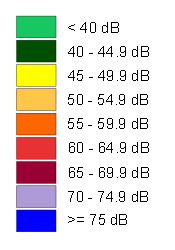

Lärmbelastung durch Strassenverkehr am Tag / in der Nacht
Copyright: Bundesamt für Umwelt BAFU
Stand: 2010
Link zur Detailbeschreibung beim BAFU

Die Angaben basieren auf flächendeckenden Modellberechnungen. Dafür wurden Daten zur Lärmbelastung von rund 75'000 km Strassen verwendet und für die gesamte Schweiz gerechnet. Die Daten sind gesetzlich nicht verbindlich. Verbindliche Angaben zur Belastung wie auch zur Lärmsanierung geben die jeweiligen Vollzugsbehörden: Nationalstrassen: Bundesamt für Strassen (ASTRA); Haupt- und übrige Strassen: Kantonale Lärmschutzfachstellen.